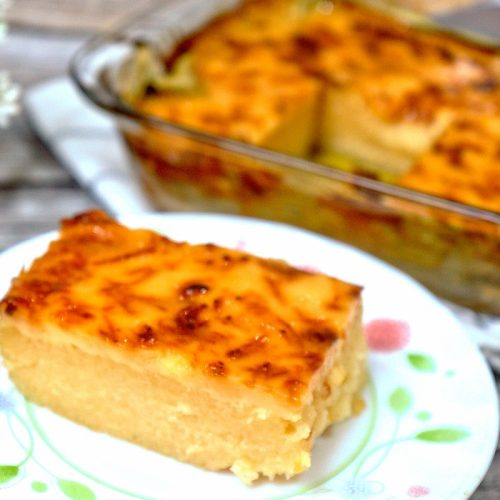

Cassava Cake
The cassava cake has a mildly sweet, milky flavor from the combination of milks.


Ingredients:
- 2 cups grated, peeled yuca
- 1 (14 ounce) can coconut milk
- 1 (14 ounce) can sweetened condensed milk
- 1 (12 ounce) can evaporated milk
- 2 large eggs, beaten
Step-by-step Instructions:
- Preheat the oven to 350 degrees F (175 degrees C).
- Stir yuca, coconut milk, condensed milk, evaporated milk, and eggs together in a bowl until thoroughly combined; pour into a 2-quart baking dish.
- Bake in the preheated oven until set, about 1 hour.
- Turn the broiler on and bake until the top of the cake is browned, 2 to 3 minutes.
- Cool completely in the refrigerator before serving, about 1 hour.